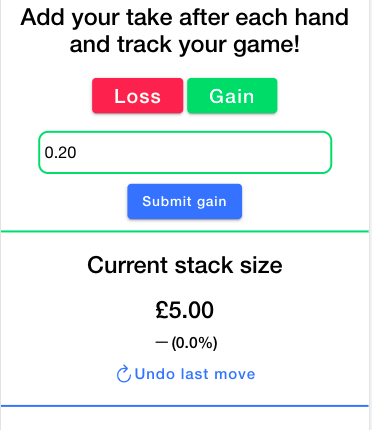

I am a motivated MSci Physics student currently in attendance at University College London. I am in my final
year for the 2021/22 academic year, where I will be working on my Master's, having achieved a 1st class grade in my nominal BSc.
I have experience working in different environments, alongside other
accomplishments, but am looking to kick-start my career in the programming and data science sectors.
2018-Present

University College London (UCL)
- Currently in the third year studying for an MSci Physics degree
- Achieved a first class grade in both Year 1 and Year 2
- Voted Social Executive of the UCL Physics Society, beating fierce competition
2016-2018

Ysgol Dewi Sant Sixth Form
- Finished top of my year with four A-levels, including the Welsh Baccalaureate Qualification (A*), Mathematics (A), Physics (A) and Chemistry (B)
- Key participant in a BBC documentary contrasting the Welsh education system with that on South Korea, filmed over several weeks in Seoul and Pembrokeshire;
click here to watch it.
2011-2016
Ysgol Dewi Sant Secondary School
- Graduated with 13 GCSEs to be one of the top in my county, with 11 A*, 1 A and 1 B, including three modern languages, French (A*), English (A*) and Welsh (A*)
- While in school, passed the Grade 6 piano exam and passed Grade 5 music theory with distinction
Other Qualifications

Level 2 Food Safety and Hygiene for Catering

Enhanced Certificate: Disclosure & Barring Service check
Extra-Curricular Activities

UCL Physics Society
I was elected as Social Executive by the physics student body as part of the 2019/20 commitee for the UCL Physics Society. The role, which required a lot of organisation
on my part, involved dealing with events and networking with businesses. These came alongside communication and teamwork, as parts of my role
included the rest of the committee and working directly with others. It provided me with a fantastic learning experience and developed my whole skillset.

BBC Documentary: School Swap Korea Style
One of the most influential experiences of my life so far, I was part of a trip to South Korea with the BBC
for a project to record a programme contrasting schooling there with schooling in Wales.
It was an amazing and surprising experience which led to the realisation that the competition is global and
that it is possible to sacrifice too much when tackling issues the wrong way. Click here to watch the documentary.

STEM Cymru: Engineering Education Scheme Wales School Competition
I participated in an Engineering Education Scheme Wales (EESW) school competition across my county, in which I was part of a team that
liaised with a real company, Mainstay Marine Solutions, in order to develop
mathematical models to solve a real issue they faced. The importance of teamwork and communication are just a few things I took away from the project.
2019-present
Computational Physics Demonstrator
NeutriKnow
- Student-led startup based around introducing sixth-formers/college students the basics of Python
- A role where I give direct feedback to students about improving their code, including things like the right level of commenting and function/loop structures
- Aims to introduce them to computational physics on a basis that orients them towards the UCL physics course
2019-2020
121 ASCENTS Student Mentoring

NatCen Social Research
- Part of a team, visiting a school in a deprived area in London to mentor students in their science GCSEs on a one to one basis
- A direct mentoring role, with measurable, rewarding outcomes for both myself and my mentee, allowing them to accomplish their goals
- Leads the way to improvement in communcation and leadership through teaching, alongside organisation and time-management to ensure all content is covered
2019
Staff & Product Manager

Coastal Stay Pizza Oven
- Serious leadership role, involving hiring of staff and monitoring incoming produce for quality
- Also a hands-on job working directly in food prep and managing staff, acting as supervisor
- Prompted huge improvements in my organisation and leadership, while also developing communication for interviewing new staff
2015
Work Experience

M&G Investments, London
- Week-long experience at a smart investment manager valued at £351B in assets, under four distinct divisions of the company
- Different daily duties including communications, digital, marketing and investment aspects
- Led to an improvement in professionalism and communication through encounters with different teams
Other Experience
The jobs below show my commitment as a hard worker, having been employed without break since 14.
2016-2018
Restaurant Team Member

Siop Fach Tearoom, Mathry
- Cafe environment with far-reaching business and small, close management structure and staff
- A wide-ranging job that developed my leadership due to increased responsibility and training of new staff
2014-2016
Restaurant Team Member

Something's Cooking, Letterston
- First job at the age of 14
- Popular award winning fish and chip restaurant with 5 Star Quality Award 2013
- Introduced me to fast paced work and developed my interpersonal skills
- Fast learning led to a promotion within a year of employment
Mathematical & System Software
Python
First and foremost, I am trained in Python to carry out data science and computational physics tasks. These vary from crunching
data to calibrate circuitry, to modelling wavefunctions in different potential wells, to extrapolating relationships in data using
statistical methods.
Below are some personal projects and tools that I am currently developing; click on any of them for an overview of how they work.
Projects
Tools & Scripts
Front-end Development
HTML5
Sass/SCSS
TypeScript
In addition to my training in Python, I am self-taught in the HTML/SCSS/TS trio, while currently engaged in multiple front-end projects.
My main project that demonstrates my skills would be PokerChart, a web-app I built solo
using the Angular/Ionic frameworks. This involved learning TypeScript as a better extension to JavaScript, teaching me about strict type-setting
and its use in debugging and error avoidance.

PokerChart allows users to track their poker play throughout the game. It doesn't have to be linked to any
other software and can be used for live home games or in conjunction with online play. It shows you stats about
your wins and your fold consistency among other things.
From a technical aspect, it is the first solo project of mine connected to a Google Firebase hosted backend, which
allowed me to build authentication services for user accounts. It also means games can be saved on a database to be
observed later on. Furthermore, group games have been implemented using a room-key system, which allows other users to track
each other's games while playing against one another. Each player is listed in the room and given a colour and, like seen above,
players' stack sizes and average changes throughout the game are all shown on one graph to compare.
DISCLAIMER: PokerChart might still be buggy at stages, it is an ongoing project!